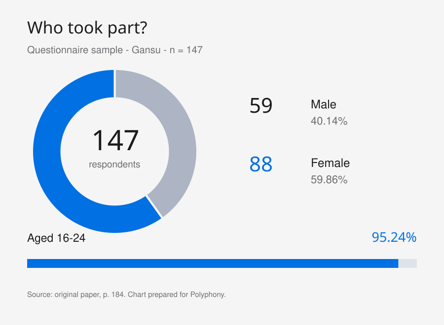
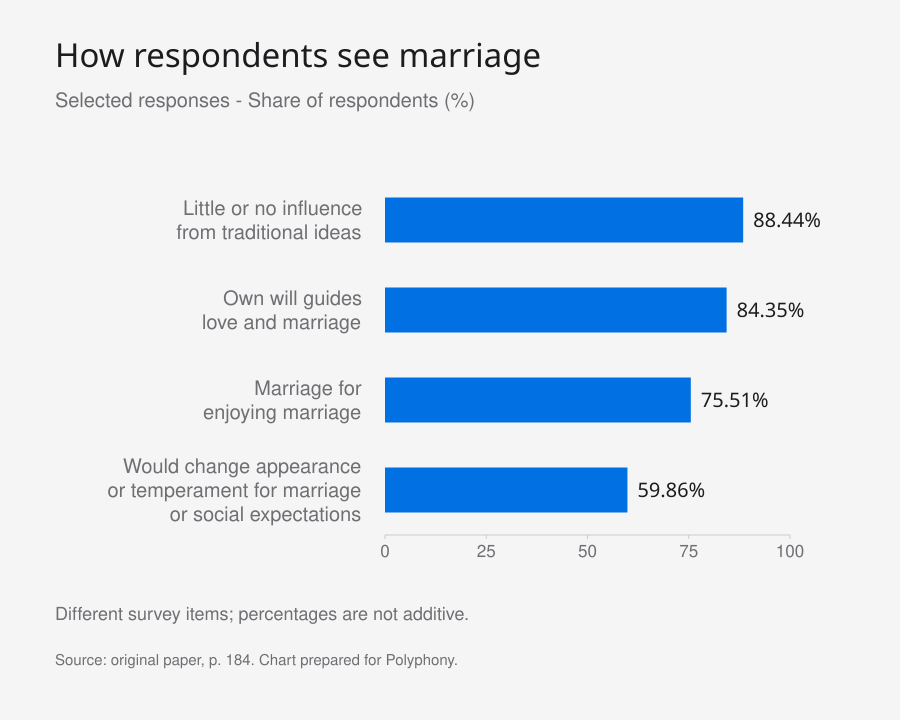

Abstract
According to the data from the National Statistical Department, the marriage rate in Gansu province of China showed a general downward trend in the period from 2010 to
2020. In recent years, with the development of the economy, both urban and rural areas in
Gansu have made great progress in various aspects, but the official survey data shows that the level of economic development and living standards are not positively correlated with the marriage rate in Gansu. This may caused by the marriage and love view of youth. These years. Thanks to the rapid development of China’s economy, the fertility rate in Gansu has declined. This research speculates that this may be due to the new ideas brought by economic development, which have caused some changes in their views on marriage and love. In this paper will study how views on marriage and love affect the marriage rate based on a questionnaire survey. Because most of the existing studies are conducted in economically developed coastal or southern cities, and places like Gansu in the central and western regions are less concerned, this paper decided to take Gansu as an example to explore.
Keywords: Marriage and love view, marriage rate, economy, young person, questionnaire survey
1. Introduction
This study focuses on the current situation of the declining marriage rate in Gansu province of China, which is of great significance for exploring the causes and the relationship between the causes and the young people’s views on marriage and love. In 2010, the marriage rate in Gansu Province was 8.7‰, higher than the national average of 8.4‰3. In 2015, the marriage rate in Gansu Province was 7.9‰, lower than the national average of 8.6‰3. In 2020, the marriage rate in Gansu Province was 6.6‰, lower than the national average of 7.3‰ [1]. Moreover, this study can provide a perspective for understanding the national trend of marriage rate from the case of Gansu. This study mainly researches the views of marriage and love among the young people in Gansu, using questionnaires and interviews to collect data from the relevant people. The advantage of this method is that it can well analyze the individual and the general situations, and obtain more clear and reliable data, which is conducive to the progress of the research. The ultimate goal of this study is to demonstrate how the
views of marriage and love of the young people in Gansu affect the marriage rate. To achieve this goal, the paper has carried out the following research.
In recent years, with the development of the economy, both urban and rural areas in Gansu have made great progress in various aspects, but the official survey data shows that the level of economic development and living standards are not positively correlated with the marriage rate in Gansu. The paper believes that economic development and social progress, have given birth to or brought more individualistic ideas or theories, which makes more and more people start to rebel against traditional etiquette and abandon traditional concepts, especially in underdeveloped areas like Gansu, the impact of new ideas is particularly obvious. They start to follow the idea of “undoing gender”, and start to resist the social power relations determined by gender, so more and more people start to break free from the shackles of marriage, abandon traditional gender definitions, and start to transition from institutional marriage for child-rearing and elderly care to companionate marriage or individualistic marriage. However, for the current social system, this is a requirement that is not easy to satisfy, thus creating a contradiction: the contradiction between the young people’s increasing demand for higher- level marriage and the not-so-high-level social requirements. Therefore, more and more young people choose not to get married. To prove this, the paper made a questionnaire survey to know how Gansu youth’s thinking: In this questionnaire, the paper asks questions that include: whether individuals change their appearance and temperament to get married or to conform to social expectations. This question is intended to explore whether people do gender in marriage issues. The investigator also inquired about the objective of matrimony and the correlation between affection and matrimony. These inquiries intended to ascertain whether university students’ perspectives on matrimony and affection had transformed from institutionalized matrimony for the aim of procreation and geriatric care to companionate matrimony for the quest of affection and individualistic matrimony for the quest of personal development.
2. Literature Review
In the article “Is Marriage and Fertility Deinstitutionalized in China?”, scholar Li Ting concluded that previous surveys showed that most college students regarded marriage and fertility as basic stages of survival, and they had relatively traditional views on marriage and fertility, without obvious tendencies of deinstitutionalization. However, their value foundation for marriage and fertility had changed from traditional moral obligations to personal emotional satisfaction. The survey also found that college students had low expectations for marriage and fertility, mainly due to the huge obstacles to marriage and fertility, such as economic pressure, employment pressure, housing pressure, education pressure, etc. These obstacles led college students to postpone and avoid marriage and fertility, rather than change their views. In addition, the survey also showed that there were significant gender and socioeconomic status differences in college students’ views on marriage and fertility, such as women being more inclined to marriage and fertility than men, and college students with high income and education levels being more inclined to marriage and fertility than those with low income and education level. The survey also analyzed the interaction between the Internet and circle culture and the views of college students on love and marriage and found that the Internet provided more information and choices for college students' love and marriage, but also increased the uncertainty and risk of love and marriage. At the same time, online communities also influenced college students’ views on romantic love and marriage, making them more inclined to interact and marry people of the same kind [1]. However, the content of gender was not much involved, and the research scope was relatively broad, covering the whole country, and did not conduct targeted research on a specific region. This paper will focus on Gansu, conduct a questionnaire survey and interview, and emphasize the theory of gender, filling the above gaps.
“The Decline of Marriage And Rise of New Families” is a report jointly conducted by the Pew Research Center and TIME, which was released on November 18, 2010. This report used two complementary research methods: one was a nationwide survey of 2,691 adults, and the other was an analysis of half a century of demographic and economic data, mainly from the U.S. Census Bureau. This report explored the transformative trends that led to the decline of marriage and the emergence of new family forms in the past 50 years, and how these changes were influenced by the attitudes and behaviors of different classes, ages, and races. The report found that nearly four in ten Americans believed that marriage was becoming obsolete and that Americans’ definition of family was more diverse and inclusive. The report also analyzed the characteristics and challenges of different types of families (such as single-parent families, same-sex partner families, cohabiting families, etc.), and the meaning and value of marriage and family for individuals and society [2]. However, despite the in-depth analysis of the causes of the decline of the marriage rate in the United States, which has great reference value for this field, its America-centric approach is not universal. For example, China is less influenced by racial views. And the author’s research is more in line with the general reality and characteristics of China. In addition, the above-mentioned researchers did not emphasize the impact of gender on the views of marriage and love, and the author effectively filled this gap.
This paragraph is a critical analysis of the article “China Population Development Survey: Views on Marriage and Love of Different Population Groups” written by Nan Sun, a doctoral student from Fudan University. The article studied the basic attitudes, marriage purposes, and traditional views on marriage and the love of people. The article found that people’s views on marriage were changing, and people no longer generally regarded marriage as a necessary option for life, and endowed more emotional meaning to it. People’s autonomy on whether to marry was also increasing [3]. However, this study did not have obvious regional characteristics, the research object was too broad, and it did not combine the views on marriage and love with the fact that the marriage rate is declining today. In contrast, the author’s research filled this gap.
3. Theory
The theory used by the paper is based on gender, which is a new understanding of gender proposed by Candace West and Don Zimmerman in 1987. It argues that gender is not a fixed biological attribute, but a process that is constantly accomplished in daily interactions. Doing gender theory emphasizes three concepts of gender: sex, gender category, and gender. Sex refers to the physiological characteristics of people, such as genitals, chromosomes, and hormones. Gender category refers to the label of being male or female that people are assigned to in society, usually based on the external features of sex. Gender refers to the behavior, attitude, and characteristics of being male or female that people display in society, usually constrained and guided by gender norms. Doing gender theory suggests that people constantly show their gender in daily life through their speech, actions, dress, preferences, etc., to conform to the social expectations and requirements of being male or female. This behavior of displaying gender is an interactive achievement, as well as a social constraint. Doing gender theory points out that gender is not a natural or essential attribute, but a social or constructed phenomenon, which can vary with time, place, and situation [4]. Similarly, the author will base on the process of deinstitutionalization of marriage proposed by Andrew Cherlin in his article “The Deinstitutionalization of American Marriage” published in the Journal of Marriage and Family in 2004, that is, from institutionalized marriage to companionate marriage, and then to individualized marriage [5]. This paper combines these theories and proposes a hypothesis: the young people in Gansu are becoming less bound by gender and institutionalized marriage, and with the development of a new economy and new ideas, they begin to increasingly undo gender and gradually transform institutionalized marriage into companionate marriage and individualized marriage.
4. Results of the Survey
4.1. Questionnaire Survey
Among the 147 Gansu youths who participated in the survey, there were 59 males and 88 females, with males accounting for 40.14 percent and females accounting for 59.86 percent. Among them, 95.24 percent of the total number of people were aged between 16 and 24 [6]. And the vast majority of the total number of people believed that the purpose of love should be to enjoy romance, accompany each other, and grow together. Only 21.77 percent of the respondents believed that the purpose of love was to get married and have children. This confirmed that the traditional concept of marriage was being broken, and new ideas were influencing the views of love among young people. Similarly, in the choice of marriage purpose, 75.51 percent of people believed that marriage was for enjoying marriage, and only 29.93 percent of people believed that marriage was for having children. Another evidence of the progress of thought is that when the question asked “Will your marriage and childbearing views be influenced by traditional ideas (such as passing on the family line, raising children to provide for old age, ‘people have to get married at a certain age’, etc.)”, 88.44 percent of people believed that traditional ideas had no or only slight influence on them, and only 11.56 percent of people were greatly influenced by traditional ideas [7]. And 84.35 percent of people believed that their own will would dominate their love and marriage, rather than family needs and social expectations. This proved the weakening of institutionalized marriage and the rise of companionate marriage and individualistic marriage. When asked “Will you personally change your appearance and temperament for the sake of marriage, or to conform to social expectations?”, 59.86 percent of people said they would, while 40.14 percent said they would not. From this can see that doing gender is still the mainstream of this society, but at the same time, there are voices of undoing gender that begin to emerge and develop. But the shortcomings of the research survey are also very obvious, such as the survey questions are not deep enough, the options are too simple and binary, and the questionnaire distribution and acquisition channels are limited to WeChat, resulting in the respondents’ circles, classes, family situations are not very different in some cases, the generality is not very strong.
调查数据 / DATA IN VIEW


查看图表数据
| 指标 | 论文报告值 |
|---|---|
| 问卷样本 | 147 人 |
| 男性 | 59 人 · 40.14% |
| 女性 | 88 人 · 59.86% |
| 16–24 岁 | 95.24% |
| 传统观念无影响或仅有轻微影响 | 88.44% |
| 个人意愿主导婚恋 | 84.35% |
| 结婚为了享受婚姻 | 75.51% |
| 愿为结婚或社会期待改变外表与气质 | 59.86% |
4.2. Interview
This study randomly selected two young people from the survey participants and conducted interviews with them. The two interviewees were Mr. Wang, a young man from Gansu who studies at Wuhan polytechnic university, and Ms. Zhang, a young woman from Gansu who studies at Jiangsu Normal University. Their interview results are summarized as follows:
The interviewee is Mr. Wang, a contemporary young man with independent thinking and free choice. His views on love and marriage are mainly influenced by his parents and his own experience, rather than by social media or other external factors. His expectation for marriage is based on love and companionship with his partner, rather than to meet the expectations of society or family. He thinks marriage is a social contract, as well as a responsibility. He hopes to grow together with his partner, face the challenges and pressures in life together, and create a warm family together. His marriage choice is influenced by both his parents and society, as well as by his preferences and conditions. He will not completely cater to or resist the opinions of others, but make reasonable decisions according to his situation. He does not agree to change his essence to cater to the “doing gender”. He thinks that the “doing gender” has a certain rationality, but they should not become the shackles that limit personal development. He thinks that every family’s situation is different, and one theory cannot guide the behavior of all people. He believes that only when the economic foundation allows, people can truly get rid of the bondage of the “doing gender”. He has a certain critical attitude towards the contemporary young people’s view of love. He thinks that this view of love is not
conducive to alleviating China’s population problem. He thinks that this is a complex social problem that needs to be reformed and adjusted from multiple aspects such as the economy, politics, education, etc. He thinks that the government should increase the rational distribution of social resources, improve the income level and welfare guarantee of the people, increase the birth subsidy and support, be alert to the negative propaganda of self-media, and guide the public to establish a correct view of fertility.
The other interviewee is Ms. Zhang, a female young person who pursues independence and self- improvement. Her love and marriage views are mainly influenced by her family education and social media. She thinks love is not a necessity, but a seasoning of life. She will not give up her life goals and values because of love, nor will she change her essence because of marriage. In a relationship, she thinks both people should be themselves first, and then love each other well. Her expectation of marriage is to make her life better than when she was single. If marriage makes her life worse, she would rather not get married. She thinks the purpose of marriage is to have a small family of her own, which can give her support and warmth when she works hard outside. She also admits that marriage has some constraints on her personal development. She will consider more factors when facing personal opportunities, such as the interests of her partner and family. Her view of marriage is more influenced by modern thoughts. She is not a non-marriageist, nor a follower, but a happinessist. She thinks that young people nowadays do not consider marriage because they have not found the right person, or they do not see future happiness. She thinks marriage is a choice, not a necessity. She is influenced by the idea of free love. She thinks that the two sexes should come together because of mutual attraction, not because of other reasons. But she also thinks that the traditional concept of matching doors and households has some meaning today. Only on the same height, free love can have the possibility of development and success. She will not cater to “doing gender” for marriage. She thinks that if she chooses to marry her partner, it means that her partner can accept her whole, not ask her to change for him. She thinks the premise of marriage is that she has to be herself. If she caters to stereotypes about marriage, she loses the meaning of marriage. She thinks that the current love view of young people is negative. She thinks this is because of social pressure and realistic factors. She thinks that young people will consider a lot of costs and risks when choosing love or marriage, and also consider their interests and happiness. She thinks this is a very realistic attitude, but also a very sad phenomenon. She thinks that the superstructure should solve the practical problems of young people, such as employment, housing, pension, medical care, etc. Only by making young people’s lives better, can they have more choices and possibilities.
It is not difficult to see from the above two interviews that young people’s ideas are influenced by the teachings and influences of the previous generation and traditional concepts, but the majority of the ideas are to pursue companionate marriage, that is, to desire love and happiness. And individualistic marriage, emphasizes one’s progress in marriage. As for whether to do gender, both interviewees said that they would not use doing gender to change themselves for marriage. They pursue the essence and pure feelings, rather than being “actors” under the requirements of a certain social theory. When it comes to the impact of the currently prevalent view of love and marriage on the marriage rate and social development, both interviewees think that the currently prevalent view of love and marriage is negative and that the government or leaders should take relevant measures to solve the practical problems faced by young people and reduce their living pressure and cost.
5. Discussion
The young people in Gansu have indeed begun to break away from institutionalized marriage, they desire to break the traditional views and transform the institutionalized marriage that is subject to others into the companionate marriage and individualized marriage that they have the initiative, meanwhile, some young people begin to undo gender, which may be the reason for the decline of the
marriage rate in Gansu. Due to the rising cost of marriage and dating, the high pressure of work, the fast pace of life, the lack of leisure time, the small social circle, the long duration of education, and other factors, more and more people born in the 1980s and 1990s are forced to postpone marriage or remain single [8]. With the social changes and the overall improvement of people’s education level, the modern concept of marriage and love will show a stronger expansion. In terms of people’s attitude towards the purpose of marriage, the traditional purpose of marriage gradually fades, and people are more in favor of its economic and social functions than its reproductive functions [9]. The paper believes that China’s economy has shifted from a high-speed growth stage to a high-quality growth stage, but at this critical juncture, China’s aging population problem gradually begins to threaten future economic development.
6. Conclusion
The research results of this study show that the young people in Gansu have indeed begun to break away from the institutionalized marriage, and they aspire to challenge the traditional views, and transform the institutionalized marriage that is subject to others into their own active partner marriage and individualized marriage—they have higher expectations for marriage. At the same time, some young people start undoing gender, no longer linking their gender with social needs, advocating spontaneity and being themselves, which may be one of the reasons for the decline in the marriage rate in Gansu. This study provides a lot of valuable reference significance for future research in this direction, mainly contributing to the impact of gender on the marriage rate. Future research should focus more on this aspect and explore it in depth. In addition, this study calls for the government and social organizations to follow the trend of thought, and guide young people to establish a more positive view of marriage and love based on respecting their choices.
References
[1] Li, T. (2022). Have marriage and fertility been de-institutionalized in China? Findings from a survey on marriage and fertility intentions among college students. Journal of Chinese Women’s Studies, (3), 85-102.
[2] Pew Research Center. (2010). The Decline of Marriage And Rise of New Families.
[3] Sun, N, (2021) “Marriage and Love Views of Different Population Groups: A Survey on China’s Population Development,” Wenhui Daily, 5.
[4] Don H. (1987) Zimmerman, Gender and Society, Published By: Sage Publications, Inc, 1(2), 125-151.
[5] The deinstitutionalization of American marriage. (2004) Journal of Marriage and Family ( IF 4.917 ) Pub Date.
[6] Mu, G. (2021). Analysis of the marriage and love situation of contemporary Chinese youth. People’s Forum, (4), 1-6.
[7] Sun, N. (2020). China Population Development Survey: Marriage and Love Views of Different Population Groups. Wenhui, (11), 1-4.
[8] Li, L., Mu, Y., Wang, H., Lv, M., & Mubon, R. (2022). A Brief Investigation and Analysis of The Changes in College Students’ View of Marriage and Love under the Normalization of the Epidemic Prevention and the Reasons Behind It. Advances in Psychology, 12(10), 3626-3641.
[9] Yang, X., Wang, M. (2022). Influence Factors of Chinese Urban Residents’ Marriage Choice on Perspective of Marriage View Changing —A Study of Chengdu City. Journal of Northwest Normal Univer sity: Natural Science, (1), 130-134.
本文依据作者提供的原版论文排版，保留英文正文、章节、参考文献及原文页码；网页使用作者笔名，并省略原稿实名联系方式，另调整换行与段落显示。两张数据图由网站依据第 184 页报告值绘制，不属于原版论文插图。
© 2024 The Authors · CC BY 4.0